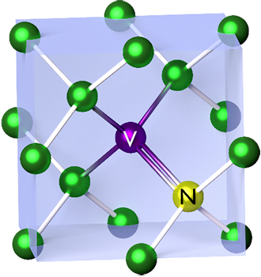

Qubits store data in quantum computing. As mentioned in the previous page, qubits, unlike traditional bits, exist in a superposition of zeros and ones.
Qubits are made from a defect inside a diamond. A typical diamond is completely made of carbon atomes. However, when using a diamond to create a qubit, one carbon atom within the diamond's structure is replaced with a nitrogen atom, while the adjacent atom is removed cpmletely. This structure is called a nitrogen vacancy (NV) center.
The NV center structure of a qubit allows the concept of superposition to take place. Quantum particles such as electrons have a property known as spin. Particles can either spin up or down. Spin is a quantum prpoerty and therefore particles can be in a superposition of spin up and down. When an electron is caught in the NV center is acts as the qubit. It can be in a superposition of both spins. In this situation the directions of the spin act as the zeros and ones.
NV Center Image: National Institute of Standards and Technology - CC0